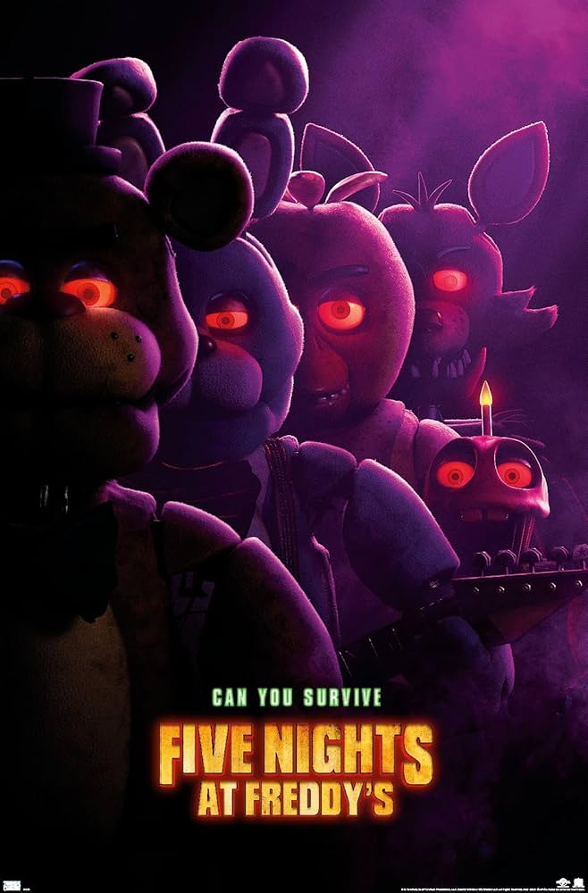

Introduction to Five Nights at Freddy's
Welcome to the eerie and thrilling world of Five Nights at Freddy's (FNaF), a popular indie horror game series created by Scott Cawthon. Since its release in 2014, FNaF has captivated millions of players with its unique combination of suspense, storytelling, and terrifying animatronics. Whether you're a long-time fan or a newcomer, this game will keep you on the edge of your seat!
The Game Concept
In FNaF, players take on the role of a night security guard at a creepy, run-down pizzeria called Freddy Fazbear's Pizza. Your job is simple: survive the night while being haunted by malfunctioning animatronic characters who come to life after hours. Armed only with security cameras, doors, and limited power, you must use strategy and quick thinking to stay alive until morning.